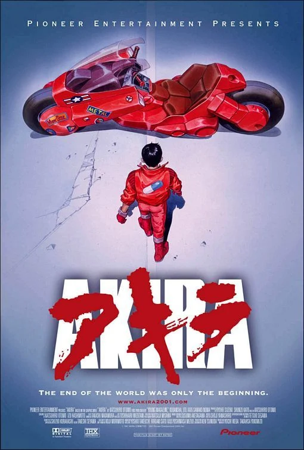

Akira

Em 2019, na distópica metrópole de Neo-Tokyo, o líder de uma gangue de motoqueiros, Kaneda, precisa salvar seu amigo de infância, Tetsuo. Após sofrer um acidente, Tetsuo desenvolve poderes telecinéticos instáveis e se torna o epicentro de uma conspiração governamental ligada a uma força apocalíptica conhecida como Akira.